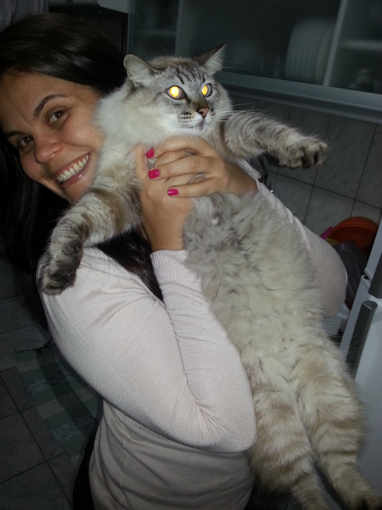
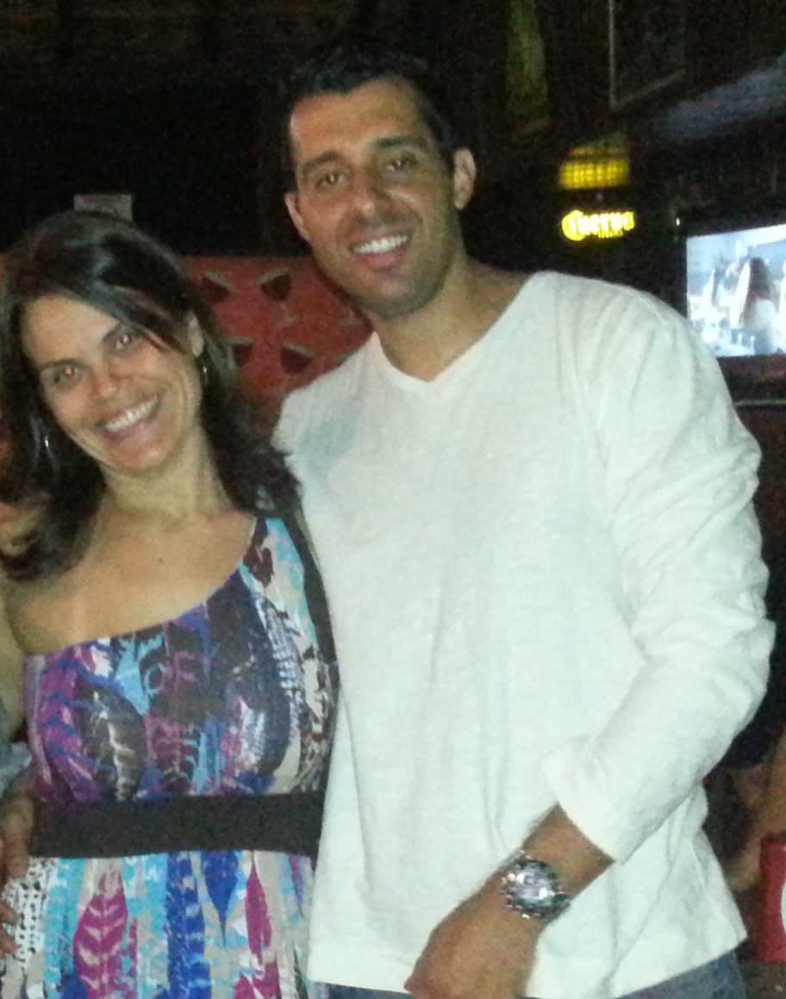

Olá! Seja bem vindo a minha pagina pessoal
Me chamo Ricardo Marcos de Freitas
Primeiro filho de 3 irmãos, sempre gostei de tecnologia e esportes, minha infancia voltada mais para o esporte pelas dificuldidas financeiras, oque dificultava acesso a tecnoloia nos anos 80/90. Ao conseguir meu primeiro emprego aos 14 anos, consegui comprar um video game e dai passei a dividir o tempo livre (que ja era pouco nesta epoca) entre futebol e video game. Conclui todo ensino fundamental e medio em escola publica e fiz minha primeira faculdade em MKT em instituição particular, na Uni9.
Um capitulo à parte, tambem tenho vida afetiva rsrs. Depois de altos e baixos, hoje namoro uma pessoa maravilhosa, a Renata, que esta comigo a 4 anos.
Devo muito de minha evolução pessoal/profissional a ela, que me fez mais responsável, mais calmo, me mostrou outro rumo e maneira de pensar na vida.
Te amo "Big Smack zibida".
 <